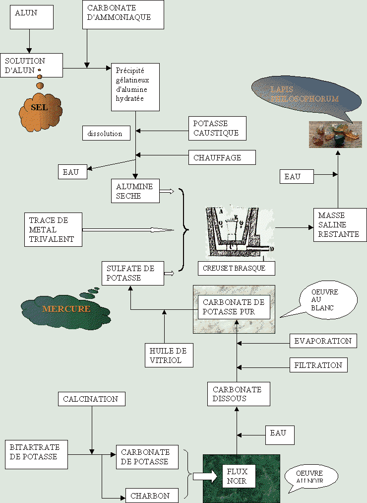

le schéma de fabrication de la pierre philosophale par
la voie sèche


Voir aussi
 L'histoire
L'histoire Les
textes
Les
textes Mercure
philosophique
Mercure
philosophique Soufre
Soufre la
Pierre philosophale
la
Pierre philosophale
 Un
logis alchimique
Un
logis alchimique  Philalèthe
Philalèthe  carbonates
carbonates  salpêtre
salpêtre

FIGURE I


Voir aussi
 L'histoire
L'histoire Les
textes
Les
textes Mercure
philosophique
Mercure
philosophique Soufre
Soufre la
Pierre philosophale
la
Pierre philosophale
 Un
logis alchimique
Un
logis alchimique  Philalèthe
Philalèthe  carbonates
carbonates  salpêtre
salpêtre

Ce schéma, simplifié par rapport à notre version initiale tient compte du Mercure qui, sans doute, a été utilisé le plus souvent par les Adeptes.
1)- A partir du bitartrate de potasse [tartre des tonneaux], par calcination, on a un mélange de carbonate de potasse et de charbon : c'est le flux noir ; on l'hydrate et le carbonate qu'il contient est dissous. On filtre et on évapore. On obtient alors du carbonate de potasse pur [ce sel est d'une blancheur éclatante]. Soumis à l'huile de vitriol, il donne du sulfate de potasse ;
2)- A partir de l'alun [dont les sources sont diverses : argiles non ferrugineuses, schistes alunifères, pyrites, etc.], par action du carbonate d'ammoniaque, on a un précipité glatineux d'alumine hydratée. On le soumet à l'action de la potasse caustique [qui nécessite de la chaux pour sa préparation], et après chauffage, on obtient de l'alumine anhydre ;
3)- On met le sulfate de potasse et l'alumine dans un creuset brasqué ainsi qu'une trace de métal trivalent [qui, d'ailleurs, peut être récupéré à partir de l'alun qui est un sel double d'aluminium et de métal trivalent] ; on chauffe à 1300°C : le sulfate de potassium se transforme en sulfure ; on reprend la masse saline obtenue, après refroidissement, et on obtient [en théorie] des cristaux de corindons colorés par l'oxyde métallique choisi.les matières de base sont :
-l'alun
-le carbonate d'ammoniaque
-le tartre
-l'eau
-un métal trivalent
-la chaux (non indiquée)Les matières intermédiaires sont :
-le flux noir
-l'alumine hydratéeè L'oeuvre au noir consiste en l'obtention du FLUX NOIR, mélange de charbon et de carbonate de potasse ;
è L'oeuvre au blanc consiste en l'obtention du CARBONATE DE POTASSE à un grand état de pureté ;
è L'oeuvre au rouge se traite au creuset brasqué, dans un fourneau à soufflet, par exemple, et aboutit dans le cas présent à un CORINDON COLORE. D'autres variantes sont possibles.Le Mercure commun est le FLUX NOIR
Le Mercure philosophique est le SULFATE DE POTASSE
Le Sel est de L'ALUN

FINIS